질문을 몇 번 던져서
정답을 맞히기 — 결정 트리
이 자료는 결정 트리 교안 한 권을 끝까지 담았습니다
"특징 ≤ 기준값? 질문을 몇 번 해서 정답을 맞히려면, 어떤 질문을 먼저 해야 할까?"
트리 읽기, 결정 경계, 지니·엔트로피, 규제, CART 지니 예제
정보 이득으로 특징 고르기 — 14명 데이터로 끝까지
리프 = 평균, MSE, 계단 예측, 선형 vs 트리, 한계
7주차 2차시 수업은 군집화 DBSCAN(26–35쪽)과 결정 트리 1–15쪽이었습니다. 시험 준비용으로 챕터별로 나눠 DBSCAN은 7주차 1차시 자료로 옮겼고, 이 자료는 결정 트리만 담았습니다. 결정 트리 16쪽부터는 8주차 1차시 수업 예정이라 교안 기반 초안입니다.
왜 배우고, 어디에 힘을 줄까
다시 지도 학습(x와 정답 y가 있음)입니다. 결정 트리는 규칙을 사람이 그대로 읽을 수 있어서(해석하기 쉬움) 배웁니다. 대신 정확도는 최고 수준보다 떨어져, 나중에 트리를 여러 개 합치는 방법(배깅·랜덤 포레스트·부스팅)으로 이어집니다.
| 구분 (추측) | 교안 쪽 | 섹션 | 무엇을 할 수 있으면 되나 |
|---|---|---|---|
| 꼭 이해 | 1–10 | 01–08 | 트리 노드를 읽을 수 있다. 지니·엔트로피가 0이면 무슨 뜻인지. 규제 방향(max ↓, min ↑) |
| 계산 연습 | 11–15 | 09 | 식에 숫자를 넣어 지니와 지니 감소량(ΔG)을 계산하고 가장 큰 분할을 고른다 |
| 8-1 수업 예정 | 16–35 | 10–17 | 엔트로피 예제(ID3), 회귀 트리, 선형 vs 트리, 한계 — 수업 후 보완 |
이 차시는 진도만 받았고 심화·시험 범위에 대한 교수님 말씀은 받지 못해, 구분은 제 추측입니다. 6주차에 "식은 형태를 안내해 준다"고 하셨으니 식은 각 부분의 뜻을 보는 대상으로 읽으면 됩니다.
미리 짚고 갈 1학기 개념
| 자료구조 — 트리 | 루트(맨 위), 자식, 리프(자식 없는 노드), 깊이(루트에서 몇 칸 내려왔나)를 그대로 씁니다. 결정 트리는 대부분 이진 트리(자식이 둘)이고, ID3만 범주 수만큼 갈라질 수 있습니다. |
| 로그 log₂ | log₂ 1 = 0, log₂(1/2) = −1. 엔트로피 계산은 이 두 값만 알아도 감을 잡을 수 있습니다. |
| 비율과 가중평균 | "노드 안에서 클래스 k가 차지하는 비율 pk", "샘플 수 비율로 가중평균"이 계속 나옵니다. 5명 중 4명 = 0.8, (2/7)·0 + (5/7)·0.32처럼 계산합니다. |
분류 트리와 불순도
트리 기반 방법 Tree-based Methods
입력 변수들이 이루는 공간(예측 변수 공간predictor space)을 여러 개의 단순한 영역으로 쪼개는 방법입니다.
공간을 쪼개는 데 쓴 분할 규칙(예: "꽃잎 길이 ≤ 2.45cm?")들을 나무 모양으로 정리할 수 있어서 결정 트리decision tree라고 부릅니다.
결정 트리는 분류와 회귀를 모두 할 수 있고, 출력이 여러 개인 과제(multi-output)도 할 수 있습니다.
"스무고개"라고 흔히 설명하지만 정확히는: 각 단계에서 특징 하나와 기준값 하나로 데이터를 둘(또는 여러 개)로 나누고, 나뉜 각 부분에서 같은 일을 반복합니다. 마지막에 남은 각 영역마다 하나의 예측값(분류면 클래스, 회귀면 숫자)을 정합니다.
트리 기반 방법의 장단점
규칙을 그대로 읽을 수 있음. simple and useful for interpretation.
not competitive with the best supervised learning approaches.
그래서 배깅bagging, 랜덤 포레스트random forests, 부스팅boosting을 다룹니다. 트리를 여러 개 키워 하나의 합의된 예측으로 합칩니다. 정확도는 크게 좋아지지만 해석하기 쉬운 장점은 일부 잃습니다(트리 수백 개의 다수결은 한 번에 읽을 수 없음).
이번 교안에는 세 방법의 내용이 없어 뒤 수업에서 다룰 것으로 보입니다(추측).
결정 트리 용어 — Iris 트리
| 루트 노드Root | 맨 위 노드, 깊이 0 |
| 자식 노드Child | 부모 바로 아래에 연결된 노드 |
| 리프 노드Leaf | 자식이 없는 끝 노드. 여기서 최종 예측 |
왼쪽 화살표 = 조건 참(True), 오른쪽 = 거짓(False). 색 = 다수 클래스, 진할수록 한 클래스만 있음(순수).
질문 두 번으로 150송이를 분류합니다: 꽃잎 길이 ≤ 2.45 → setosa / 아니면 꽃잎 너비 ≤ 1.75 → versicolor, 아니면 virginica.
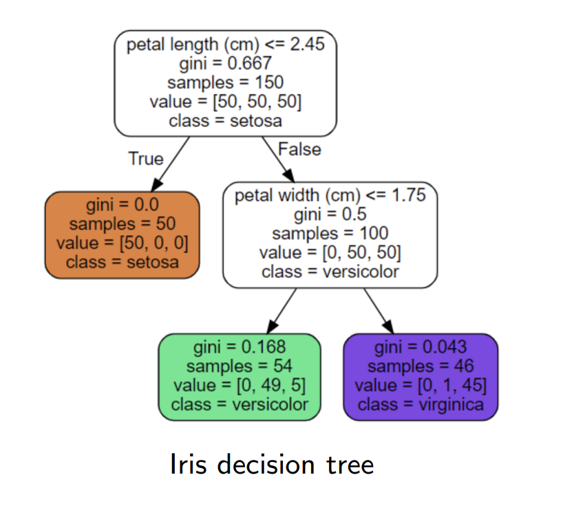
다시 그린 그림 · 누르면 원본노드 한 칸 읽는 법
| 줄 | 뜻 (루트 노드 기준) |
|---|---|
| petal length ≤ 2.45 | 이 노드의 분할 규칙. 참이면 왼쪽, 거짓이면 오른쪽 (리프에는 없음) |
| gini = 0.667 | 이 노드의 불순도 — 클래스가 얼마나 섞였나 (05) |
| samples = 150 | 이 노드에 도달한 학습 샘플 수 |
| value = [50, 50, 50] | 클래스별 샘플 수 [setosa, versicolor, virginica] |
| class = setosa | 여기서 멈춘다면 낼 예측(가장 많은 클래스, 동점이면 앞의 것) |
꽃잎 길이 5cm, 너비 1.5cm: 5 ≤ 2.45 거짓 → 오른쪽. 1.5 ≤ 1.75 참 → 왼쪽 리프 → versicolor. 이 리프 54개 중 49개가 versicolor라 맞을 확률을 49/54 ≈ 91%로 추정할 수도 있습니다.
"특징 하나 ≤ 기준값"만 묻기 때문입니다. cm → mm로 바꾸면 기준값도 2.45 → 24.5로 바뀔 뿐 나뉘는 방식은 같습니다. 거리로 판단하는 SVM·K-평균과 반대입니다.
결정 트리의 결정 경계 Decision Boundary
앞의 트리를 평면에 그린 것입니다. x₁ = 꽃잎 길이, x₂ = 꽃잎 너비.
- 굵은 실선 x₁ = 2.45 — 루트(Depth=0) 분할, 왼쪽 setosa를 떼어 냄
- 파선 x₂ = 1.75 — 깊이 1 분할
- 점선 — 트리를 더 깊게 키우면 생기는 분할(Depth=2)
리프 하나 = 직사각형 영역 하나, 경계는 항상 축에 평행한 직선입니다. 한 번에 특징 하나만 보고 나누기 때문입니다.
파선 근처에서 파랑과 초록이 섞여 있어 리프의 gini가 0이 아니었던 것(0.168, 0.043)입니다.
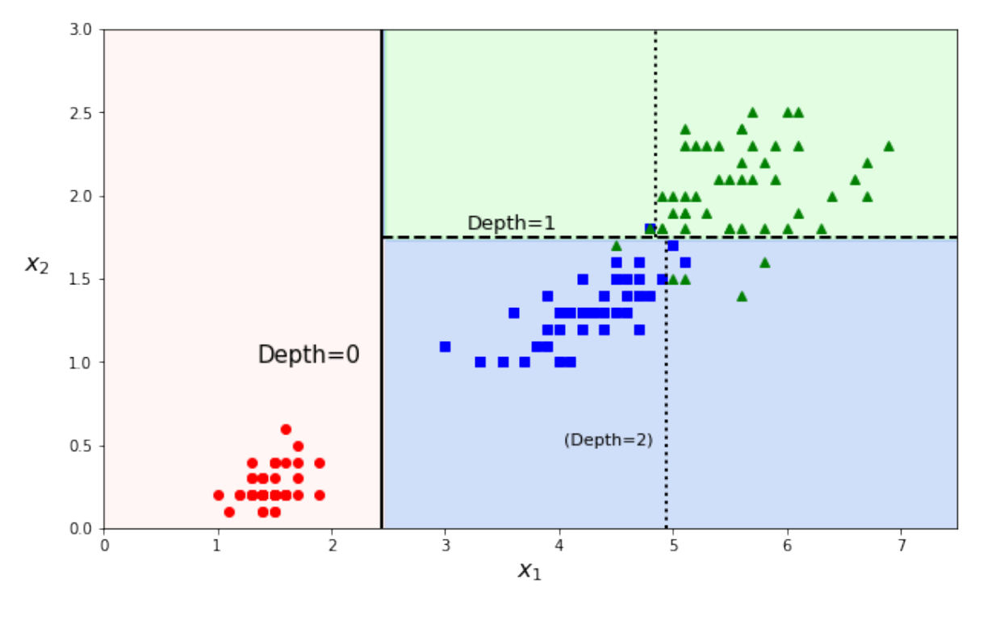
다시 그린 그림 · 누르면 원본좋은 분할 = 나눈 뒤 깨끗해지는 분할
각 노드에서 "어떤 특징을, 어느 기준값으로 나눌까"를 정해야 합니다. 좋은 분할은 나눈 뒤 각 자식이 한 클래스 위주로 깨끗해지는 분할입니다. 이 깨끗하지 않은 정도가 불순도impurity입니다.
| 척도 | 쓰는 곳 |
|---|---|
| 지니 다양성 지수Gini | 분류 — scikit-learn 기본값 |
| 엔트로피entropy | 분류 — criterion을 entropy로 바꾸면 |
| 분산 (MSE) | 회귀 (12) |
Gi = 1 − ∑k pi,k2 , pi,k = Nk,iNi
읽는 법: 클래스 비율을 제곱해 더한 값을 1에서 뺍니다. 한 클래스만 있으면 1 − 1² = 0 (완전히 순수). 고르게 섞일수록 커집니다.
범위: 0(100% 순수) ~ 1 − 1/클래스 수(매우 불순). 2클래스 0.5, 3클래스 0.667.
Iris 노드의 지니를 직접 계산하기
| 노드 | value | 계산 | G |
|---|---|---|---|
| 루트 | [50, 50, 50] | 1 − 3 × (1/3)² | 0.667 (3클래스 최대) |
| setosa 리프 | [50, 0, 0] | 1 − 1² | 0 |
| versicolor 리프 | [0, 49, 5] | 1 − (49/54)² − (5/54)² = 1 − 0.8235 − 0.0086 | 0.168 |
| virginica 리프 | [0, 1, 45] | 1 − (1/46)² − (45/46)² | 0.043 |
그림에 적힌 값과 같습니다. versicolor가 대부분이라 0에 가깝고, 루트는 세 클래스가 똑같이 섞여 최대입니다.
엔트로피 Entropy — 불확실성
Hi = − ∑k, pi,k≠0 pi,k log(pi,k)
- 한 클래스만 있으면 확실성 ↑ → 엔트로피 = 0
- 클래스가 고르게 섞이면 불확실성 ↑ → 엔트로피 ↑
- 비율이 0인 클래스는 합에서 뺌(log 0은 정의 안 됨)
앞의 마이너스: p는 0~1이라 log p ≤ 0. −를 붙여 엔트로피를 0 이상으로 만듭니다.
반반 [5, 5]: −(0.5 log₂ 0.5 + 0.5 log₂ 0.5) = 1
순수 [10, 0]: 0
Iris 루트 [50, 50, 50]: log₂ 3 ≈ 1.585
14명 중 구매 9·비구매 5: ≈ 0.940 (10에서 다시)
교안 7쪽은 log의 밑을 적지 않았지만 뒤 예제는 log₂를 씁니다.
지니 vs 엔트로피
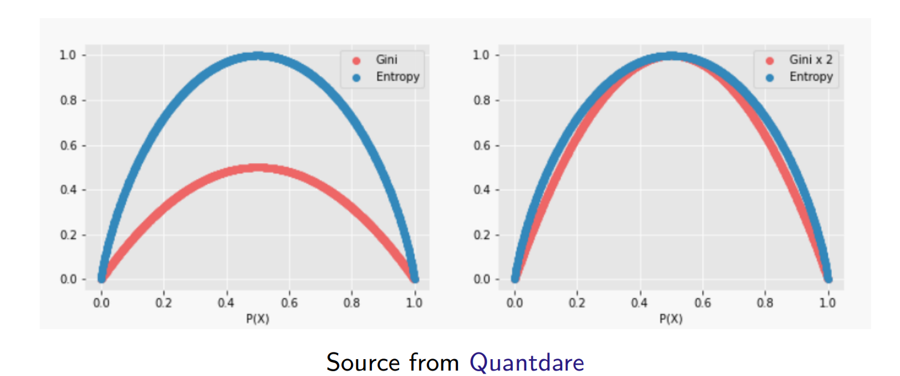
다시 그린 그림 · 누르면 원본이진 분류에서 한 클래스 비율 P(X)에 따른 불순도. 둘 다 순수(0 또는 1)에서 0, 반반(0.5)에서 최대(Gini 0.5, Entropy 1). 오른쪽처럼 Gini를 2배로 맞추면 거의 겹칩니다.
| 지니 | 엔트로피 |
|---|---|
| 계산이 조금 더 빠름 → 기본값으로 무난 | 소수 클래스에 더 민감하게 반응 |
사전 가지치기 Pre-pruning — 규제 하이퍼파라미터
결정 트리는 학습 데이터에 대한 가정이 거의 없습니다(선형 모델은 "직선 관계"를 가정). 그래서 제약 없이 두면 트리가 학습 데이터에 맞춰 계속 자라 과대적합할 가능성이 큽니다. 학습 중에 트리의 자유를 제한하는 것이 규제이고, 다 자라기 전에 막는다는 뜻에서 사전 가지치기입니다.
6주차 SVM의 C처럼 이 값들도 교차 검증으로 고르는 하이퍼파라미터입니다.
| 하이퍼파라미터 | 제한하는 것 |
|---|---|
| max_depth | 트리의 최대 깊이. 줄이면 규제 ↑ |
| min_samples_split | 노드를 나누기 위한 최소 샘플 수 |
| min_samples_leaf | 리프가 가져야 하는 최소 샘플 수 |
max_ 는 줄이고, min_ 은 늘리면 규제 ↑
min_samples_leaf로 규제하면
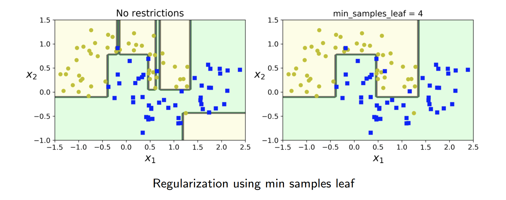
다시 그린 그림 · 누르면 원본왼쪽(규제 없음): 점 하나하나를 맞추려고 좁은 띠·작은 상자가 생겨 경계가 복잡합니다 = 과대적합. 오른쪽: 리프마다 최소 4개를 요구하면 경계가 단순해집니다. 몇 점은 반대 영역에 남지만 새 데이터에는 더 잘 맞을 가능성이 큽니다.
CART — 지니 감소량이 가장 큰 분할
CARTClassification and Regression Trees는 분류에서 지니를 쓰고, 불순도 감소량이 가장 큰 이진(두 갈래) 분할을 고릅니다.
예제: 고객 7명, 특징 4개, 구매 여부 라벨 하나.
- 나누기 전 G(D)
- 후보 분할마다 자식 지니를 샘플 수 비율로 가중평균
- ΔG = G(D) − 가중평균, 가장 큰 분할 선택
- 자식마다 반복, G = 0이면 멈춤(리프)
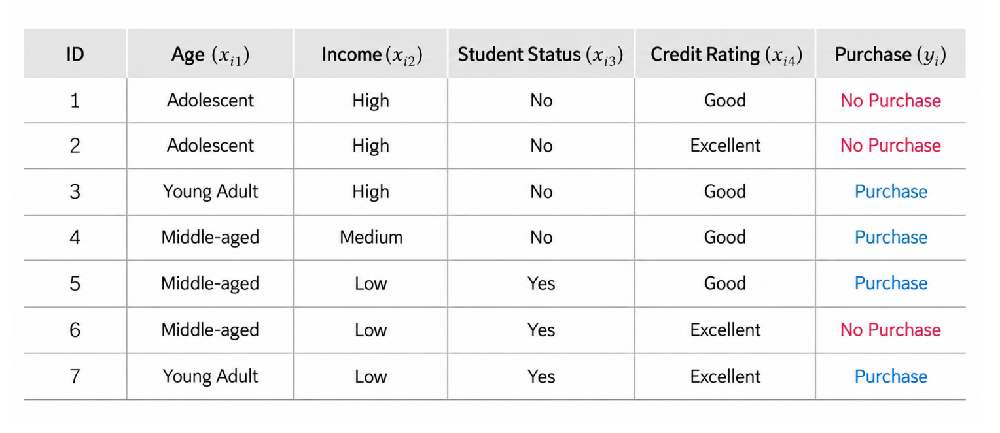
다시 그린 그림 · 누르면 원본1·2단계 — 부모 지니와 불순도 감소량
1단계: 부모 D = 구매 4, 비구매 3
G(D) = 1 − (47)2 − (37)2 = 2449 ≈ 0.490
2단계: 불순도 감소량
ΔG(D, s) = G(D) − ( |DL||D|G(DL) + |DR||D|G(DR) )
s = 후보 이진 분할, DL·DR = 나눈 뒤 왼쪽·오른쪽. 괄호 안은 자식 지니의 샘플 수 가중평균. 감소량이 가장 큰 분할을 고릅니다.
3단계 — Age의 후보 분할 비교
| 후보 | 왼쪽 DL | 오른쪽 DR | 가중 지니 | ΔG |
|---|---|---|---|---|
| s₁: Adolescent vs 나머지 | 2명 (0, 2) → G = 0 | 5명 (4, 1) → 1 − 0.64 − 0.04 = 0.320 | (2/7)·0 + (5/7)·0.320 ≈ 0.229 | 0.26 |
| s₂: Adolescent·Young Adult vs Middle-aged | 4명 (2, 2) → 1/2 | 3명 (2, 1) → 4/9 | (4/7)(1/2) + (3/7)(4/9) ≈ 0.476 | 0.014 |
s₁은 왼쪽 자식이 완전히 순수(비구매만)해져서 감소량이 큽니다. s₂는 나눈 뒤에도 양쪽이 거의 반반이라 감소량이 거의 없습니다.
4단계: Income, Student Status, Credit Rating도 같은 방법으로. 보충(Python 계산) — 루트 후보 ΔG: Age{Adolescent} 0.261 > Age{Young Adult} 0.147 > Income{High}·Credit 0.085 > Income{Medium} 0.061 > 나머지 0.014 → 루트는 Age. 오른쪽 자식(G = 0.32)에서는 Credit Rating(0.120)이 최대.
CART가 만든 최종 트리 (교안 15쪽)
- 루트: Age = Adolescent? → 왼쪽 2명은 모두 비구매(리프)
- 오른쪽 5명(구매 4·비구매 1)은 Credit Rating으로 → Good 3명은 모두 구매(리프)
- Excellent 2명(ID 6, 7)은 Income·Student가 같아 Age로만 나뉨 → Young Adult 구매, Middle-aged 비구매
모든 리프가 한 클래스만 남은 순수 노드(gini 0)입니다.
여기까지가 7주차 2차시 수업 범위입니다(교안 15쪽).
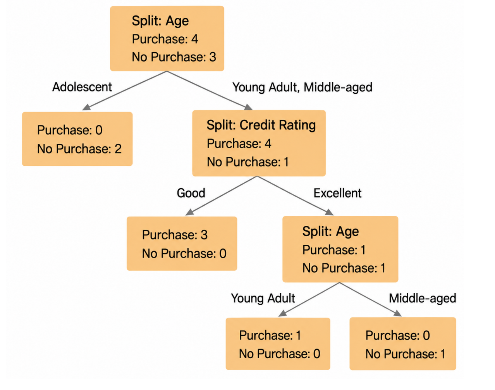
다시 그린 그림 · 누르면 원본Part 1 정리 — 7주차 2차시 수업 범위
- 결정 트리 = "특징 ≤ 기준값?" 분할 규칙으로 공간을 단순한 영역들로 쪼갬. 분류·회귀 모두. 해석 쉬움, 정확도는 최고 수준 아님.
- 노드 = 분할 규칙 + gini + samples + value + class. 리프 = 직사각형 영역, 경계는 축에 평행. 스케일링 불필요.
- 지니 G = 1 − ∑pₖ², 엔트로피 H = −∑pₖ log pₖ: 0 = 한 클래스뿐, 고르게 섞일수록 큼(2클래스 최대 0.5 / 1).
- 규제(사전 가지치기): max_depth ↓, min_samples_split·min_samples_leaf ↑.
- CART: ΔG = 부모 지니 − 자식 지니 가중평균, 가장 큰 이진 분할 선택. 예: 0.490 → Age = Adolescent?(ΔG ≈ 0.26).
엔트로피 예제 — ID3와 정보 이득
ID3 Iterative Dichotomiser 3 8-1 수업 예정 · 초안
엔트로피로 정보 이득information gain을 계산하고, 정보 이득이 가장 큰 속성(특징)을 고릅니다. CART와 달리 이진 분할이 아니라 특징의 범주 수만큼 가지를 나눕니다.
예제는 고객 14명입니다. 앞의 7명에 7명을 더했고, Age 이름이 Adolescent → Youth, Credit 값이 Good → Fair로 바뀌었습니다.
계산 순서는 CART와 같고 잣대만 지니 → 엔트로피, 감소량 이름만 ΔG → 정보 이득입니다.
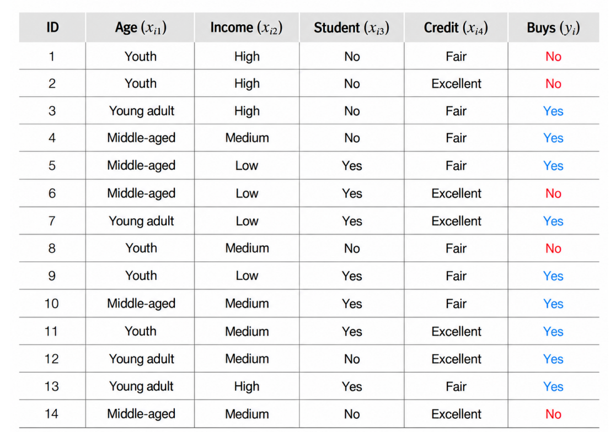
다시 그린 그림 · 누르면 원본1·2단계 — 부모 엔트로피와 정보 이득
1단계: 구매 9명, 비구매 5명
H(D) = −914log2914 − 514log2514 ≈ 0.940
2단계: 정보 이득
Gain(D, A) = H(D) − ∑v∈VA |Dv||D| H(Dv)
A = 후보 특징, VA = 그 특징의 범주들, Dv = A = v인 샘플들. 뒤쪽은 나눈 뒤 엔트로피의 가중평균. 정보 이득 = "그 특징으로 나누면 불확실성이 얼마나 줄어드나". CART의 ΔG와 같은 구조입니다.
3단계 — 네 특징의 정보 이득
| 특징 | 범주별 (구매, 비구매) | 나눈 뒤 가중 엔트로피 | 정보 이득 |
|---|---|---|---|
| Age | Youth 5 (2, 3) · Young adult 4 (4, 0) · Middle-aged 5 (3, 2) | (5/14)(0.971) + (4/14)(0) + (5/14)(0.971) = 0.694 | 0.247 (최대) |
| Income | High 4 (2, 2) · Medium 6 (4, 2) · Low 4 (3, 1) | 0.911 | 0.029 |
| Student | Yes 7 (6, 1) · No 7 (3, 4) | 0.789 | 0.151 |
| Credit | Fair 8 (6, 2) · Excellent 6 (3, 3) | 0.892 | 0.048 |
Age의 정보 이득이 가장 크므로 ID3는 Age를 첫 분할 속성으로 고릅니다. Young adult 4명은 모두 구매라 바로 리프입니다.
교안 19쪽은 0.246, 23쪽은 0.247 — 반올림한 값끼리 빼면 0.246, 반올림 전(0.9403 − 0.6935)이면 0.247. 순위는 같습니다.
ID3 1단계 — Age로 세 갈래 (교안 23쪽)
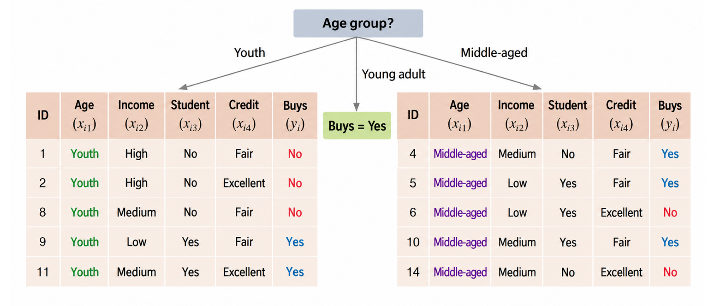
다시 그린 그림 · 누르면 원본Young adult(3·7·12·13번)는 모두 Yes라 바로 리프 "Buys = Yes". Youth(초록)와 Middle-aged(보라)는 Yes(파랑)·No(빨강)가 섞여 있어 각자 다시 정보 이득을 계산해 나눕니다.
4단계 — Youth 그룹은 Student로 (교안 25쪽)
Youth 5명: 구매 2, 비구매 3, H = 0.971
| 특징 | 범주별 | 이득 (보충) |
|---|---|---|
| Income | Low 1 (1,0) · Medium 2 (1,1) · High 2 (0,2) | 0.571 |
| Student | Yes 2 (2,0) · No 3 (0,3) → 양쪽 순수 | 0.971 |
| Credit | Excellent 2 (1,1) · Fair 3 (1,2) | 0.020 |
Student = Yes인 9·11번은 모두 Yes, No인 1·2·8번은 모두 No → 두 리프 모두 순수.
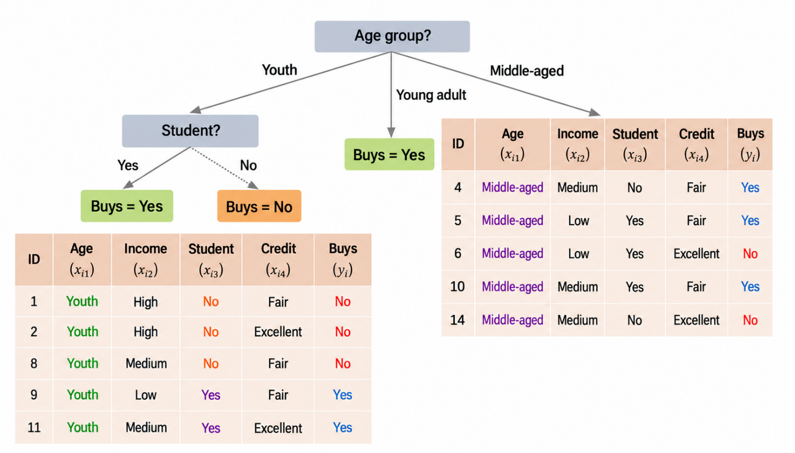
다시 그린 그림 · 누르면 원본5단계 — Middle-aged 그룹은 Credit으로 (교안 28쪽)
Middle-aged 5명: 구매 3, 비구매 2, H = 0.971
| 특징 | 범주별 | 이득 |
|---|---|---|
| Income | Low 2 (1,1) · Medium 3 (2,1) | 0.02 |
| Student | No 2 (1,1) · Yes 3 (2,1) | 0.02 |
| Credit | Excellent 2 (0,2) · Fair 3 (3,0) | 0.971 |
Fair인 4·5·10번은 모두 Yes, Excellent인 6·14번은 모두 No. 모든 리프가 순수하고, 이 트리로 14명 모두 맞힙니다(Python으로 확인).
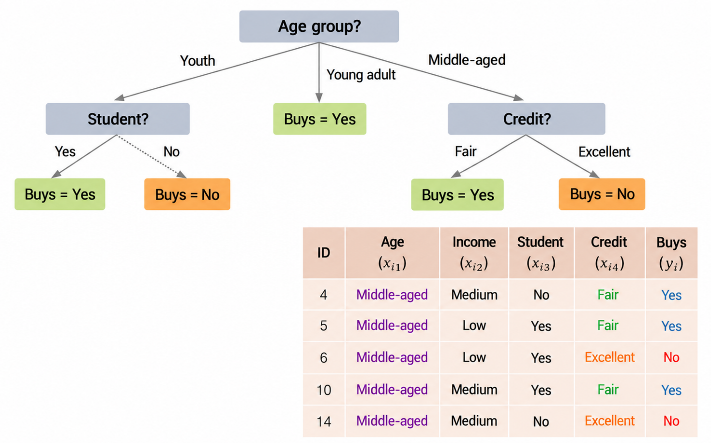
다시 그린 그림 · 누르면 원본회귀 트리와 결정 트리의 한계
회귀 트리 Decision Tree Regression 8-1 예정
구조는 분류 트리와 같고, 리프가 클래스 대신 숫자 값을 예측합니다.
| value | 노드 학습 샘플 y값의 평균 = 그 노드의 예측값 |
| mse | 노드 안 y값이 평균에서 얼마나 흩어졌나 (분류의 gini 자리) |
예: x₁ = 0.6 → 0.197 초과 → 0.772 이하 → 예측값 0.111.
부모 value = 자식 value의 샘플 수 가중평균: (44 × 0.689 + 156 × 0.259)/200 ≈ 0.354.
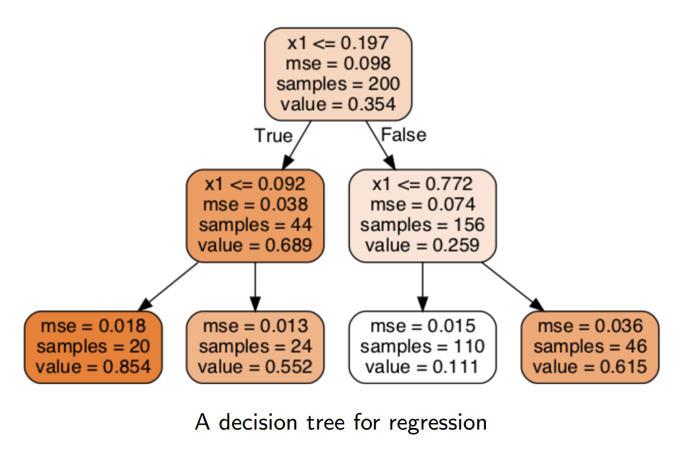
다시 그린 그림 · 누르면 원본회귀용 CART — MSE를 최소로 나누기 8-1 예정
분류에서는 불순도를 최소로 나눴는데, 회귀에서는 MSE(평균제곱오차)를 최소로 하도록 나눕니다.
J(k, tk) = mleftmMSEleft + mrightmMSEright
MSEnode = 1mnode∑(ŷnode − y(i))2 , ŷnode = 1mnode∑y(i)
- k, tk: 나눌 특징과 기준값 ("xk ≤ tk?")
- mleft, mright, m: 왼쪽·오른쪽·부모 샘플 수
- J: 두 자식 MSE의 가중평균 → 모든 후보 중 J가 가장 작은 것
분류용 CART의 "가중 지니" 자리에 MSE가 들어간 형태입니다.
MSEnode에 1/mnode가 빠져 있어 실제로는 제곱오차의 합입니다. 위처럼 1/mnode가 있어야 앞 그림의 기준값 0.197이 나옵니다(슬라이드 식대로면 0.255, Python 확인).
회귀 트리의 예측은 계단 모양 8-1 예정
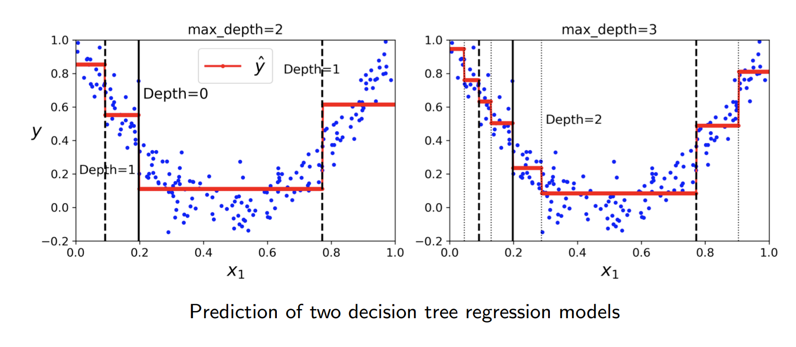
다시 그린 그림 · 누르면 원본파란 점 = 학습 데이터(U자), 빨간 계단 = 예측값 ŷ. 리프 하나가 x₁의 구간 하나를 맡고, 그 구간에서는 항상 같은 값(그 구간 y의 평균)을 냅니다. 깊이 2면 리프 4개 → 4단, 깊이가 1 늘면 구간이 2배(8단)가 되어 곡선을 더 촘촘히 따라갑니다.
회귀 트리도 규제하지 않으면 과대적합 8-1 예정
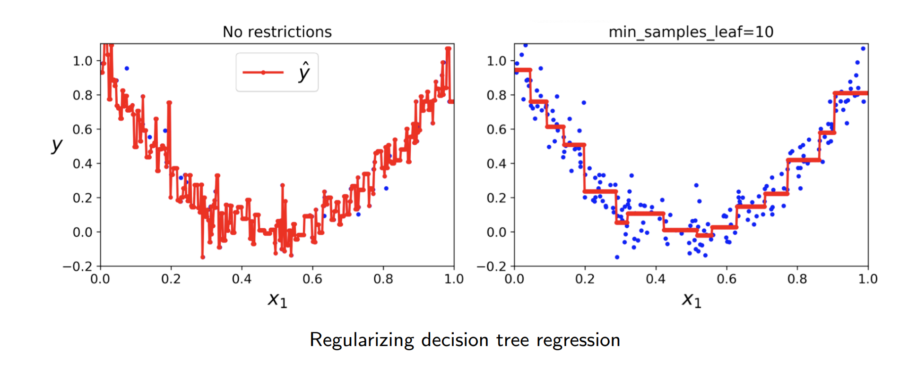
다시 그린 그림 · 누르면 원본왼쪽: 끝까지 자라면 리프가 샘플마다 하나가 되어 예측선이 모든 점을 지나며 들쭉날쭉합니다 = 과대적합. 오른쪽: 리프마다 최소 10개를 요구하면 계단 몇 개로 U자를 매끄럽게 따라갑니다(08과 같은 규제).
회귀 트리 예제 — 야구 선수 연봉 8-1 예정
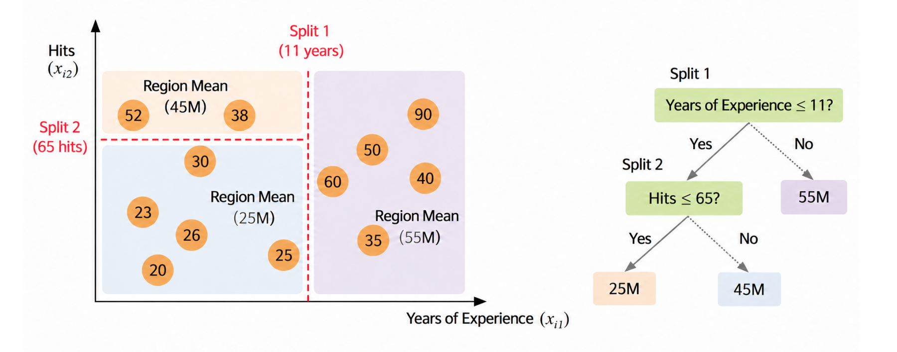
다시 그린 그림 · 누르면 원본원 안 숫자 = 연봉(M, 백만). 경력 11년으로 먼저 나누고(Split 1), 11년 이하만 안타 65개로 다시 나눕니다(Split 2). 각 영역의 예측값 = 그 영역 연봉의 평균: (52 + 38)/2 = 45, (30 + 23 + 26 + 20 + 25)/5 ≈ 25, (90 + 50 + 60 + 40 + 35)/5 = 55.
예: 경력 5년·안타 40개 신인 → 25M. 교안 그림은 오른쪽 트리의 25M·45M 칸 색이 왼쪽 영역 색과 서로 바뀌어 있습니다(숫자에는 영향 없음).
선형 모델 vs 트리 모델 8-1 예정
배경 색 = 실제 클래스 영역, 검은 선 = 모델의 경계. 왼쪽 열 = 선형 모델, 오른쪽 열 = 트리.
| 참 경계 | 선형 모델 | 트리 |
|---|---|---|
| 대각선 (위 줄) | 잘 맞음 — 직선 하나 | 축 평행 선분의 계단으로 근사 |
| 축 평행 직사각형 (아래 줄) | 대각선 하나로밖에 못 나눔 | 잘 맞음 — 두 번 분할 |
어느 모델이 낫다고 정해져 있지 않고, 데이터의 실제 구조가 어떤 모양이냐에 달려 있습니다.
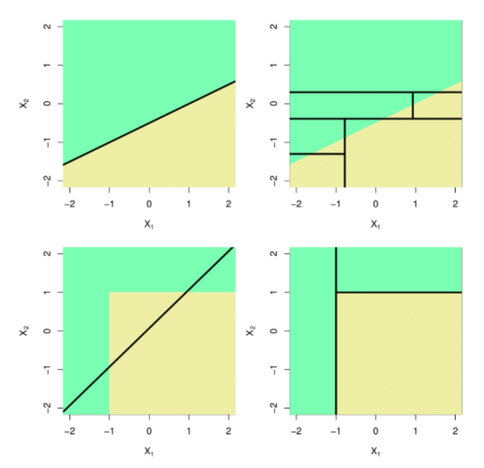
다시 그린 그림 · 누르면 원본결정 트리의 한계 Limitations 8-1 예정
이해·해석이 쉽고, 쓰기 편하고, 분류·회귀 모두 되는 강력한 방법이지만 한계가 있습니다.
| 한계 | 설명 |
|---|---|
| ① 직교 경계만 → 회전에 민감 | 모든 분할이 축에 수직이라, 데이터를 회전시키기만 해도 결과가 크게 달라진다 |
| ② 작은 변화에 민감 | 학습 데이터가 조금만 바뀌어도 트리 구조가 크게 바뀔 수 있다 |
①의 예(보충): x₁ = 0 세로선으로 나뉘는 데이터는 분할 한 번이면 되지만, 45° 돌리면 경계가 대각선이 되어 계단을 여러 개 만들어야 합니다(16 위쪽 그림). ②는 루트에서 고른 특징이 바뀌면 그 아래 전체가 바뀌기 때문입니다. 트리를 여러 개 합치는 랜덤 포레스트 등(02)이 이 불안정성을 줄입니다.
결정 트리 전체 정리 — 말로 설명할 수 있게
- "특징 ≤ 기준값?" 질문을 반복, 나눈 뒤 불순도가 가장 많이 줄어드는 질문을 먼저 고름. 리프 = 영역, 경계는 축에 평행.
- 지니 G = 1 − ∑pₖ² / 엔트로피 H = −∑pₖ log pₖ: 0 = 한 클래스뿐. 지니는 빠르고 기본값, 엔트로피는 소수 클래스에 민감.
- CART: 지니, 이진 분할, ΔG 최대 / ID3: 엔트로피, 범주 수만큼 분할, 정보 이득 최대(Age 0.247 → Youth는 Student, Middle-aged는 Credit).
- 과대적합 규제: max_depth ↓, min_samples_split·min_samples_leaf ↑.
- 회귀 트리: 리프 예측 = 구간 y의 평균, MSE 최소 분할, 예측은 계단 모양.
- 선형 vs 트리는 데이터 구조에 달림. 한계: 회전에 민감, 작은 변화에 민감.
용어 정리 ① — 분류 트리
| 결정 트리 | "특징 ≤ 기준값?" 분할 규칙으로 예측 변수 공간을 단순한 영역들로 쪼개는 지도 학습 모델. |
| 루트 · 자식 · 리프 | 맨 위(깊이 0) / 부모 바로 아래 / 자식 없는 끝 노드(예측을 냄). |
| 불순도impurity | 노드에 클래스가 섞인 정도. 0이면 한 클래스뿐(순수). |
| 지니 다양성 지수 | G = 1 − ∑pₖ². 0(순수) ~ 1 − 1/클래스 수. |
| 엔트로피 | H = −∑pₖ log pₖ. 순수하면 0, 고르게 섞이면 최대(2클래스·log₂면 1). |
| CART | 지니 감소량 ΔG가 가장 큰 이진 분할을 고르는 알고리즘. |
| 지니 감소량 ΔG | 부모 지니 − 자식 지니의 샘플 수 가중평균. |
| 사전 가지치기 · 규제 | 트리가 다 자라기 전에 자유를 제한해 과대적합을 막음. max ↓, min ↑. |
용어 정리 ② — ID3와 회귀 트리 8-1 예정 범위
| ID3 | 엔트로피로 정보 이득을 계산, 이득이 가장 큰 특징으로 범주 수만큼 분할. |
| 정보 이득information gain | H(D) − 나눈 뒤 엔트로피의 가중평균. 불확실성이 얼마나 줄었나. |
| 회귀 트리 | 리프가 숫자를 예측. 예측값 = 리프 샘플 y의 평균. |
| MSE (노드) | 노드 y값이 평균에서 흩어진 정도. 회귀 CART는 자식 MSE 가중평균 J를 최소로. |
| 직교 경계orthogonal | 축에 수직인 경계. 트리의 모든 분할이 이 모양 → 회전에 민감. |
확인 필요 · 교안 주의
결정 트리 16쪽(엔트로피 예제)부터는 8주차 1차시 수업 예정이라 10–17은 교안 기반 초안입니다. 수업 후 필기를 보내주시면 반영하겠습니다.
이 차시의 시험 범위·심화 여부에 대한 교수님 말씀은 아직 받지 못했습니다.
- 5쪽 "Variance (or MSE) for regression entropy" — 끝의 entropy는 불필요한 단어로 보임
- 19쪽 Age 정보 이득 0.246 vs 23쪽 0.247 — 반올림 순서 차이, 정확한 값 0.2467
- 23·25쪽 "adolescent group" = 표·그림의 Youth 그룹
- 26–27쪽 아래첨자 "middel-aged" → middle-aged
- 30쪽 MSEnode 식에 1/mnode가 빠짐 → 그대로면 제곱오차의 합(12)
- 33쪽 왼쪽 영역 색과 오른쪽 리프 박스 색(25M·45M)이 서로 바뀌어 있음(15)
예상 문제 안내
Q1–Q4는 7주차 2차시 수업 범위(1–15쪽), Q5–Q6은 8주차 1차시에 배울 범위(16–35쪽, 수업 후 보완)입니다. 식은 시험에서 형태를 안내해 준다는 앞 주차 말씀에 맞춰, 식을 주고 숫자를 넣는 형태로 냈습니다.
문제는 예상이며 실제 출제와 다를 수 있습니다. 정답 칸을 눌러야 답이 보입니다.
- max_depth를 줄인다.
- min_samples_leaf를 늘린다.
- min_samples_split을 늘린다.
- max_depth를 늘린다.
교안에 자주 나오는 단어
| segment v. / n. | 나누다, 부분 — Trees segment the predictor space into simple regions. 트리는 예측 변수 공간을 단순한 영역들로 나눈다. |
| split n. / v. | 분할, 나누다 — CART selects the binary split with the largest reduction. CART는 감소량이 가장 큰 이진 분할을 고른다. |
| impurity n. | 불순도 — The Gini index measures a node's impurity. 지니 지수는 노드의 불순도를 잰다. |
| entropy n. | 엔트로피 — Entropy is zero when the node contains only one class. 노드에 한 클래스만 있으면 엔트로피는 0이다. |
| terminal adj. | 끝의 — A leaf is a terminal node with no children. 리프는 자식이 없는 끝 노드이다. |
| constrain v. | 제한하다 — If left unconstrained, the tree will overfit. 제한하지 않으면 트리는 과대적합된다. |
| gain n. | 이득 — ID3 selects the attribute with the highest information gain. ID3는 정보 이득이 가장 큰 속성을 고른다. |
| orthogonal adj. | 직교하는 — Decision trees love orthogonal decision boundaries. 결정 트리는 직교하는 결정 경계를 만든다. |
필기 원문 — 보내주신 그대로
| 7-2 · 01 14:13 | 7-2 수업 (결정 트리 교안 마크다운 첨부) |
| 7-2 · 02 15:07 | 이거야 피디에프 (결정 트리 교안 PDF 첨부) |
| 7-2 · 04 15:26 | 결정트리 교안에 있는 이미지 순서대로 캡쳐했어 |
| 7-2 · 05 16:04 | 너무 어려워. 왜 배우는지 뭘 알아야하는지 뭘 이해해야하는지 모르겠어. 강사가 얘기해주듯이 이해할 수 있게 만들어줘. 너~무 어려워 |
| 7-2 · 06 16:10 | T15페이지 까지(앤트로피 예제부터 다음 시간 수업) 수업 끝 |
| 10.22 02:11 | 7-2 의사결정트리(DBSCAN부터 7-2에서 한건 맞지만 7-1에서 마무리하자. 7-2는 의사결정트리내용. 수업내용은 그랬지만 지금은 챕터별 시험준비자료 만드는거니까 그래) |
7-2 · 03 "군집화 26페이지부터 있는 이미지 다 가져왔어"는 7주차 1차시(군집화) 자료의 필기 원문으로 옮겼습니다.